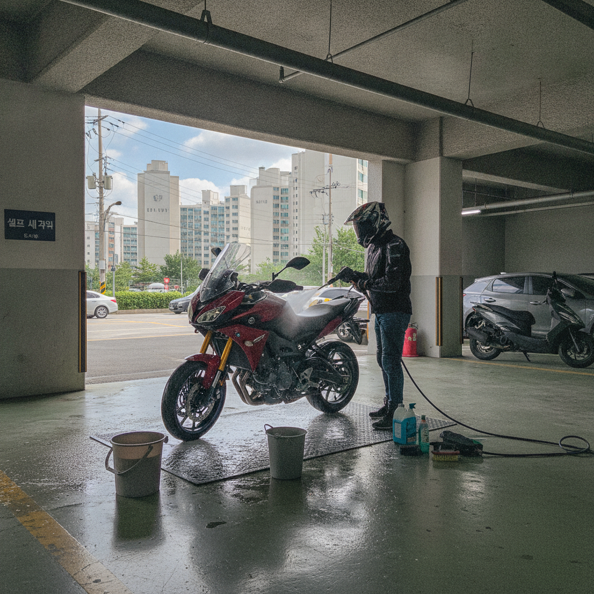
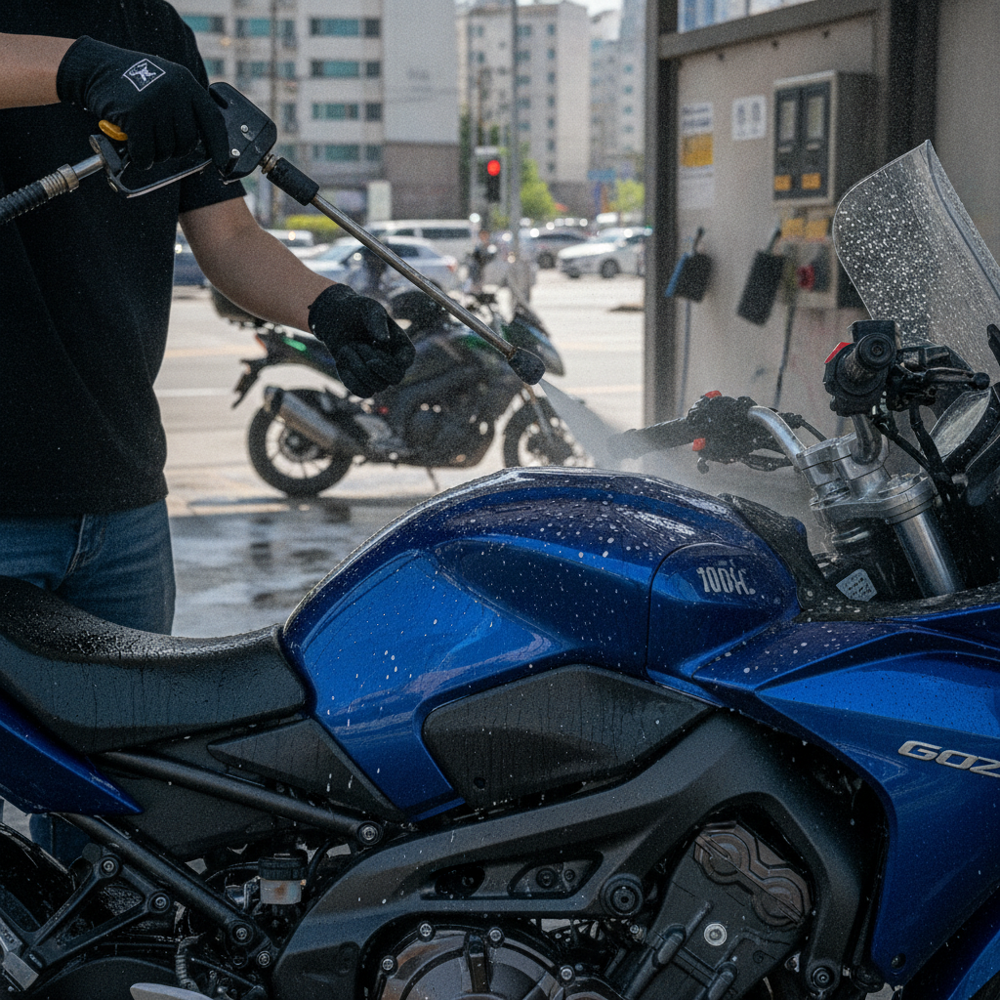
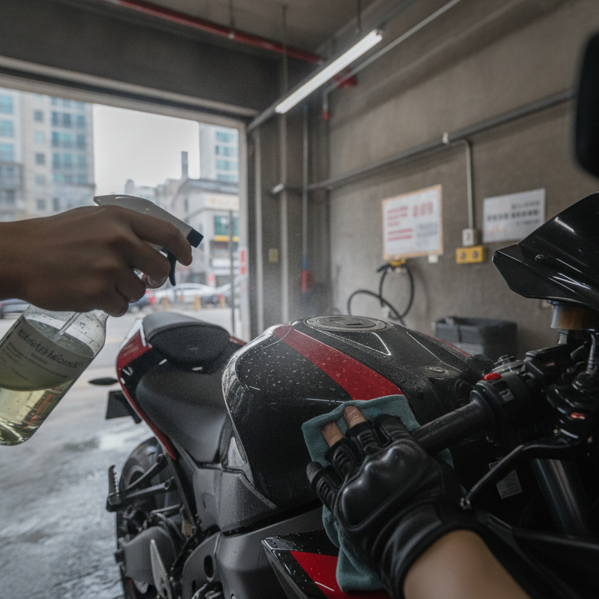
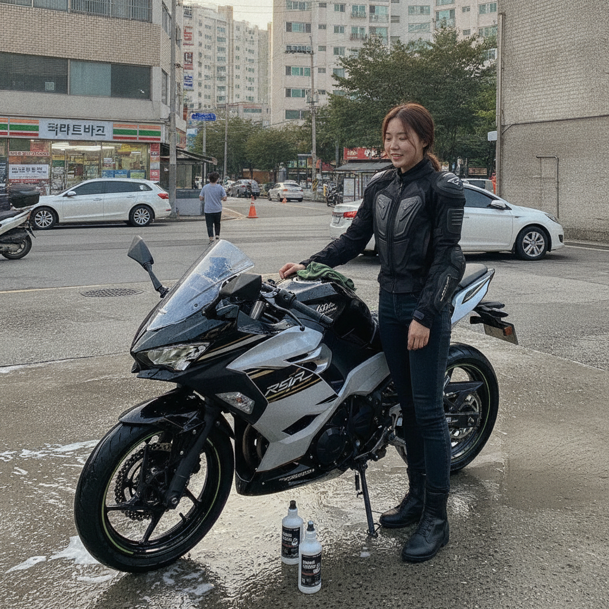
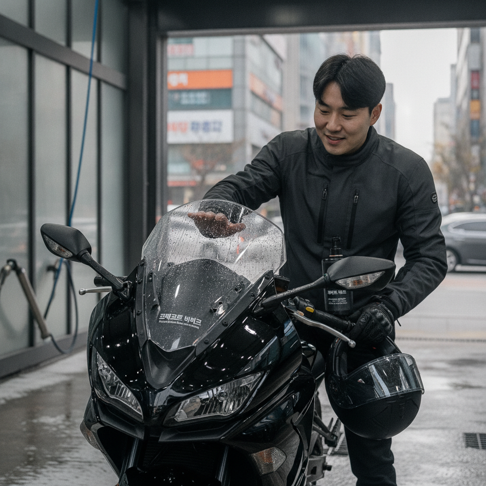

01 라이딩 후 먼지·벌레 자국, 손이
바이크 전용. 리빙코트와 혼용 금지. 퀵·티탄·레진 라인.
라이딩 후 세차, 이렇게 간단할 수 있을까요? 듀라코트 퍼마코트 바이크은(는) 퍼마코트 바이크 전용 유리막 코팅으로, 일상 공간에서 셀프 시공을 부담 없이 시작할 수 있도록 설계되었습니다.
※ 효과는 시공 환경·관리 습관에 따라 달라질 수 있습니다.

02 물만 뿌려도 때가 쓱— 빠져요.
'coin self car wash motorcycle Korea' 장면에서 퍼마코트 바이크 사용·효과를 자연스럽게 연출. 듀라코트 퍼마코트 바이크 전용 + 셀프 시공 가이드

03 코팅 덕에 물방울이 맺혀요.

04 이게 바로 듀라코트 퍼마코트 바이
05 이게 바로 듀라코트 퍼마코트 바이
단기 광택용 왁스와 달리, 유리막 코팅은 표면 위 피막으로 수분·오염 접촉을 줄이는 데 초점을 둡니다.

06 이게 바로 듀라코트 퍼마코트 바이
| 항목 | 내용 |
|---|---|
| 브랜드·라인 | 듀라코트 퍼마코트 바이크 |
| 스펙 | 바이크 전용. 리빙코트와 혼용 금지. 퀵·티탄·레진 라인. |
| 용도 | 퍼마코트 바이크 |
| 특징 | 셀프 시공, 생활 밀착 실사 사용 |
듀라코트·퍼마코트는 영국 수출 실적이 있는 라인입니다.
출퇴근 도심 도로에서 water beading sportbike tank urban garage 관련 클로즈업. 실제 손·표면·한국 도심·주차·셀프세차 생활감.
시공 후에는 전용 관리 루틴을 권장합니다. 금지 성분·혼용 제품은 안내를 확인하세요.
| 질문 | 답변 |
|---|---|
| 다른 라인과 같나요? | 퍼마코트 바이크 전용 제품이며, 금지 언급 제품과 혼용하지 않습니다. |
| 셀프로 가능한가요? | 소량 테스트 후 셀프 시공이 가능합니다. 미경험 시 넓은 면적보다 작은 부위부터 권장합니다. |
| 효과가 보장되나요? | 시공 환경·관리·사용 조건에 따라 달라질 수 있습니다. |
듀라코트 · 나눔랩